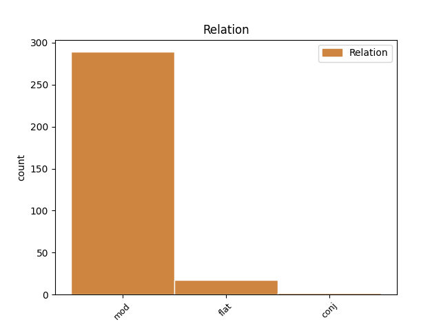
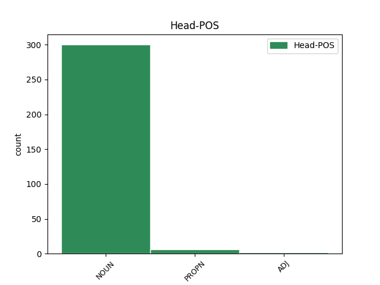
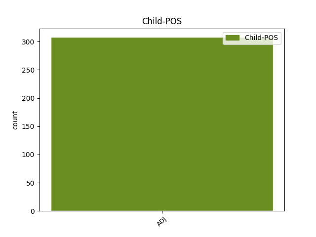

Distribution of features within this leaf



Agreement Rules sorted by frequency.
When the dependent token is None
1 Ar _ _ _ _ 0 _ _ _
2 an _ _ _ _ 0 _ _ _
3 gcéad _ _ _ _ 0 _ _ _
4 dul _ _ _ _ 0 _ _ _
5 síos _ _ _ _ 0 _ _ _
6 , _ _ _ _ 0 _ _ _
7 níl _ _ _ _ 0 _ _ _
8 go _ _ _ _ 0 _ _ _
9 leor _ _ _ _ 0 _ _ _
10 clár clár NOUN Noun Case=Gen|Gender=Masc|NounType=Weak|Number=Plur 0 _ _ _
11 maith maith ADJ Adj Gender=Masc|Number=Sing 10 mod _ _
12 le _ _ _ _ 0 _ _ _
13 feiceáil _ _ _ _ 0 _ _ _
14 ar _ _ _ _ 0 _ _ _
15 an _ _ _ _ 0 _ _ _
16 teilifís _ _ _ _ 0 _ _ _
17 . _ _ _ _ 0 _ _ _
Disagree Examples:
1 (c) _ _ _ _ 0 _ _ _
2 Ar _ _ _ _ 0 _ _ _
3 an _ _ _ _ 0 _ _ _
4 gCuntas cuntas NOUN Noun Case=NomAcc|Form=Ecl|Gender=Masc|Number=Sing 0 _ _ _
5 Tarraingthe _ _ _ _ 0 _ _ _
6 Speisialta speisialta ADJ Adj Case=Gen|Gender=Fem|Number=Sing 4 flat _ _
7 a _ _ _ _ 0 _ _ _
8 bheith _ _ _ _ 0 _ _ _
9 leachtaithe _ _ _ _ 0 _ _ _
10 , _ _ _ _ 0 _ _ _
11 déanfar _ _ _ _ 0 _ _ _
12 taíllí _ _ _ _ 0 _ _ _
13 a _ _ _ _ 0 _ _ _
14 d' _ _ _ _ 0 _ _ _
15 fhaibhrigh _ _ _ _ 0 _ _ _
16 go _ _ _ _ 0 _ _ _
17 dtí _ _ _ _ 0 _ _ _
18 dáta _ _ _ _ 0 _ _ _
19 an _ _ _ _ 0 _ _ _
20 leachtaithe _ _ _ _ 0 _ _ _
21 agus _ _ _ _ 0 _ _ _
22 measúnachtaí _ _ _ _ 0 _ _ _
23 a _ _ _ _ 0 _ _ _
24 toibhíodh _ _ _ _ 0 _ _ _
25 roimh _ _ _ _ 0 _ _ _
26 an _ _ _ _ 0 _ _ _
27 dáta _ _ _ _ 0 _ _ _
28 sin _ _ _ _ 0 _ _ _
29 ach _ _ _ _ 0 _ _ _
30 nár _ _ _ _ 0 _ _ _
31 íocadh _ _ _ _ 0 _ _ _
32 a _ _ _ _ 0 _ _ _
33 íoc _ _ _ _ 0 _ _ _
34 i _ _ _ _ 0 _ _ _
35 gcearta _ _ _ _ 0 _ _ _
36 tarraingthe _ _ _ _ 0 _ _ _
37 speisialta _ _ _ _ 0 _ _ _
38 . _ _ _ _ 0 _ _ _
1 Chaith _ _ _ _ 0 _ _ _
2 sé _ _ _ _ 0 _ _ _
3 cúpla _ _ _ _ 0 _ _ _
4 bliain _ _ _ _ 0 _ _ _
5 ina _ _ _ _ 0 _ _ _
6 chónaí _ _ _ _ 0 _ _ _
7 ar _ _ _ _ 0 _ _ _
8 an _ _ _ _ 0 _ _ _
9 oileán _ _ _ _ 0 _ _ _
10 leis _ _ _ _ 0 _ _ _
11 féin _ _ _ _ 0 _ _ _
12 ach _ _ _ _ 0 _ _ _
13 bhog _ _ _ _ 0 _ _ _
14 sé _ _ _ _ 0 _ _ _
15 isteach _ _ _ _ 0 _ _ _
16 go _ _ _ _ 0 _ _ _
17 tír tír NOUN Noun Case=NomAcc|Gender=Fem|Number=Sing 0 _ _ _
18 mór mór ADJ Adj Case=NomAcc|Gender=Masc|Number=Sing 17 mod _ _
19 sa _ _ _ _ 0 _ _ _
20 bhliain _ _ _ _ 0 _ _ _
21 1975 _ _ _ _ 0 _ _ _
22 nuair _ _ _ _ 0 _ _ _
23 a _ _ _ _ 0 _ _ _
24 bhí _ _ _ _ 0 _ _ _
25 sé _ _ _ _ 0 _ _ _
26 63 _ _ _ _ 0 _ _ _
27 bliain _ _ _ _ 0 _ _ _
28 d' _ _ _ _ 0 _ _ _
29 aois _ _ _ _ 0 _ _ _
30 . _ _ _ _ 0 _ _ _
1 B' _ _ _ _ 0 _ _ _
2 shin _ _ _ _ 0 _ _ _
3 an _ _ _ _ 0 _ _ _
4 uair _ _ _ _ 0 _ _ _
5 a _ _ _ _ 0 _ _ _
6 gcuireadh _ _ _ _ 0 _ _ _
7 an _ _ _ _ 0 _ _ _
8 Cadhan cadhan NOUN Noun Case=NomAcc|Definite=Def|Gender=Masc|Number=Sing 0 _ _ _
9 Mór Mór ADJ Adj Case=NomAcc|Gender=Fem|Number=Sing 8 mod _ _
10 thar _ _ _ _ 0 _ _ _
11 maoil _ _ _ _ 0 _ _ _
12 agus _ _ _ _ 0 _ _ _
13 a _ _ _ _ 0 _ _ _
14 dtuilleadh _ _ _ _ 0 _ _ _
15 sé _ _ _ _ 0 _ _ _
16 an _ _ _ _ 0 _ _ _
17 leasainm _ _ _ _ 0 _ _ _
18 a _ _ _ _ 0 _ _ _
19 bhaist _ _ _ _ 0 _ _ _
20 Ó _ _ _ _ 0 _ _ _
21 Ríordáin _ _ _ _ 0 _ _ _
22 air _ _ _ _ 0 _ _ _
23 , _ _ _ _ 0 _ _ _
24 Raidhse _ _ _ _ 0 _ _ _
25 . _ _ _ _ 0 _ _ _
1 As _ _ _ _ 0 _ _ _
2 san _ _ _ _ 0 _ _ _
3 go _ _ _ _ 0 _ _ _
4 dtí _ _ _ _ 0 _ _ _
5 Fromista _ _ _ _ 0 _ _ _
6 , _ _ _ _ 0 _ _ _
7 áit _ _ _ _ 0 _ _ _
8 a _ _ _ _ 0 _ _ _
9 bhfuil _ _ _ _ 0 _ _ _
10 séipéal _ _ _ _ 0 _ _ _
11 álainn _ _ _ _ 0 _ _ _
12 ón _ _ _ _ 0 _ _ _
13 11ú _ _ _ _ 0 _ _ _
14 céad _ _ _ _ 0 _ _ _
15 sa _ _ _ _ 0 _ _ _
16 stíl stíl NOUN Noun Case=NomAcc|Gender=Fem|Number=Sing 0 _ _ _
17 Rómhánach Rómhánach ADJ Adj Case=NomAcc|Gender=Masc|Number=Sing 16 mod _ SpaceAfter=No
18 . _ _ _ _ 0 _ _ _
1 Fad _ _ _ _ 0 _ _ _
2 is _ _ _ _ 0 _ _ _
3 a _ _ _ _ 0 _ _ _
4 bhí _ _ _ _ 0 _ _ _
5 an _ _ _ _ 0 _ _ _
6 sclábhaíocht _ _ _ _ 0 _ _ _
7 idirnáisiúnta _ _ _ _ 0 _ _ _
8 ar _ _ _ _ 0 _ _ _
9 siúl _ _ _ _ 0 _ _ _
10 aige _ _ _ _ 0 _ _ _
11 , _ _ _ _ 0 _ _ _
12 áfach _ _ _ _ 0 _ _ _
13 bhí _ _ _ _ 0 _ _ _
14 fadhbanna _ _ _ _ 0 _ _ _
15 ag _ _ _ _ 0 _ _ _
16 baile _ _ _ _ 0 _ _ _
17 - _ _ _ _ 0 _ _ _
18 ní _ _ _ _ 0 _ _ _
19 gá _ _ _ _ 0 _ _ _
20 ach _ _ _ _ 0 _ _ _
21 smaoineamh _ _ _ _ 0 _ _ _
22 ar _ _ _ _ 0 _ _ _
23 an _ _ _ _ 0 _ _ _
24 gconspóid _ _ _ _ 0 _ _ _
25 reatha _ _ _ _ 0 _ _ _
26 faoi _ _ _ _ 0 _ _ _
27 Stephen _ _ _ _ 0 _ _ _
28 Byers _ _ _ _ 0 _ _ _
29 , _ _ _ _ 0 _ _ _
30 nó _ _ _ _ 0 _ _ _
31 an _ _ _ _ 0 _ _ _
32 pharailís _ _ _ _ 0 _ _ _
33 sa _ _ _ _ 0 _ _ _
34 chóras córas NOUN Noun Case=NomAcc|Form=Len|Gender=Masc|Number=Sing 0 _ _ _
35 Sláinte _ _ _ _ 0 _ _ _
36 poiblí poiblí ADJ Adj Case=Gen|Gender=Fem|Number=Sing 34 mod _ SpaceAfter=No
37 . _ _ _ _ 0 _ _ _